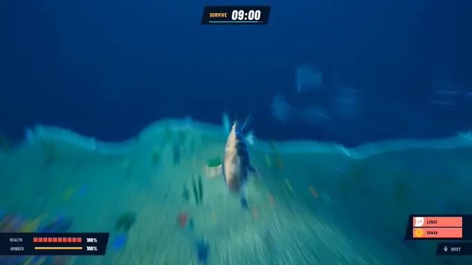
Three of you are fish. One of you is the shark.
And the shark can hear you.
Reef Run is an online party game for four friends. One player is a great white. The other three are reef fish with ten minutes to finish their tasks and get out.
You talk on proximity voice, and the tasks need talking. But every word spoken near the shark shows up on its screen. So you whisper, you hide inside a school of a thousand fish, and somebody always laughs at the wrong moment.
- Players: exactly 4 online (1 shark, 3 fish), friends or public lobbies
- Round: 10 minutes
- Platform: PC (Windows) on Steam
- Planned price: €12.99 · backers from €12
- Play it: backer beta July 2027, release Q4 2027
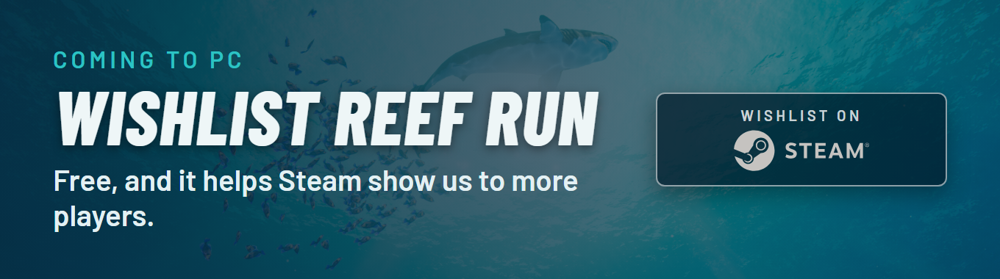
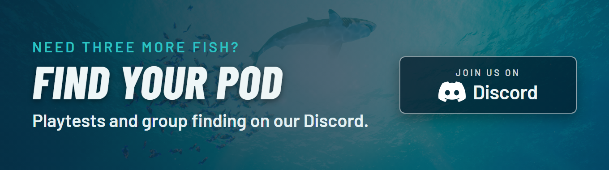
The shark is always listening
Most hide-and-seek games go quiet when the hunter is near. Reef Run can't, because the tasks are built so that each fish sees a different clue. To win you have to say it out loud.
When you speak, the shark sees a ripple where your voice came from. Up close the ripple is exact. At the edge of its hearing it is off by up to eight metres, so a whisper from far away might just save you.
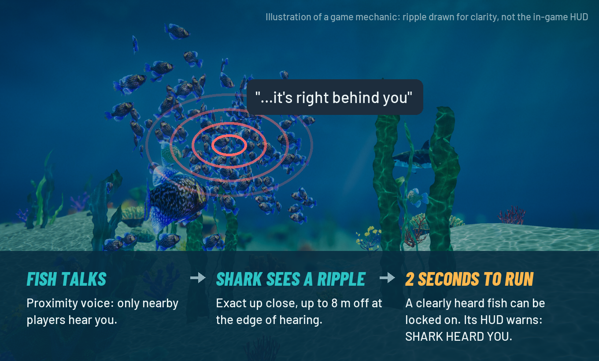
Get heard clearly and your screen warns you: SHARK HEARD YOU. You have about two seconds to move.
Play the shark
You are faster than everything on the reef, and you are hungry. Among thousands of identical fish, three are your friends.
- Listen. Voices leave ripples. Laughter leaves bigger ones.
- Sonar. One pulse lights up every player fish that is moving. Then it needs 25 seconds to recharge.
- Lunge. A burst of speed with your jaws open. Miss by a little and you still graze them.
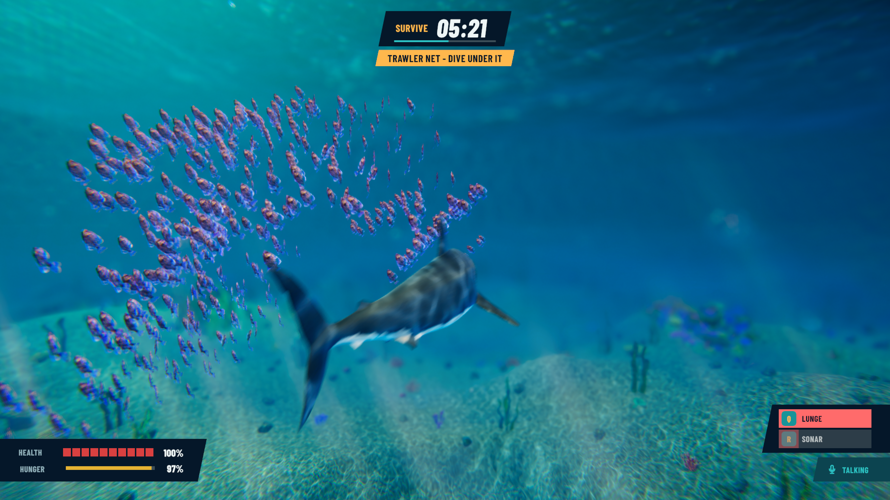
Play a fish
You are small, slow and delicious. What you have is each other, and a reef full of places to disappear.
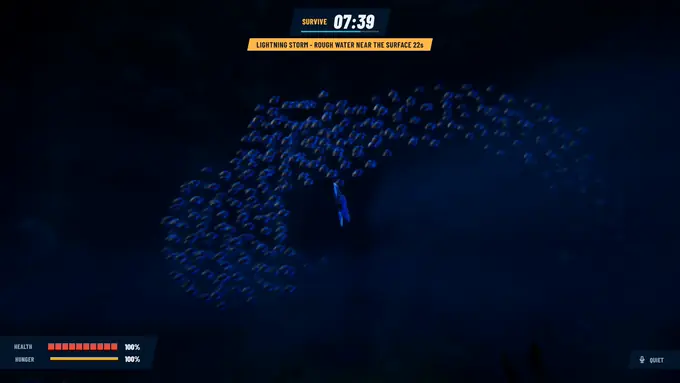
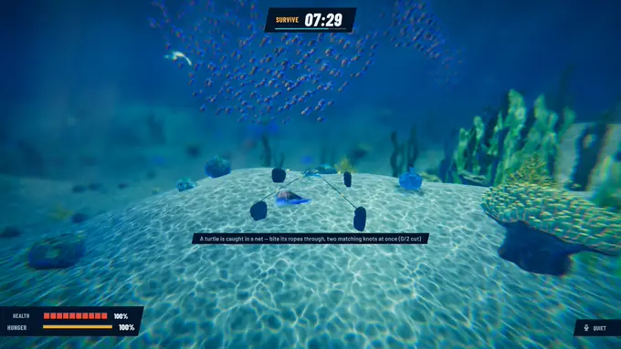
There are three co-op tasks in the build today: free a tangled turtle, relay a code between fish who each see half of it, and clean up the reef. Each one is easy if you can shout and nerve-racking if you can't.
And if you get eaten, you are not done. Ghosts get their own voice channel, and once per round a ghost can flash the shark's position to the fish who are still alive.
The reef fights back
Every round, the sea throws something at all four of you. There are nine events, and you never know which is coming.
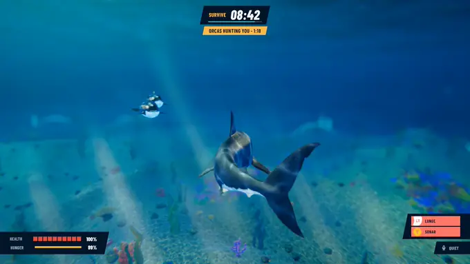
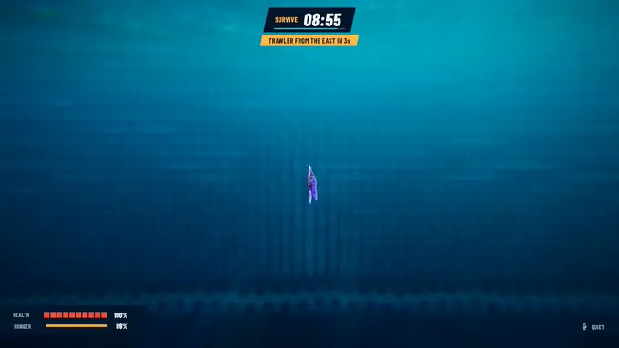
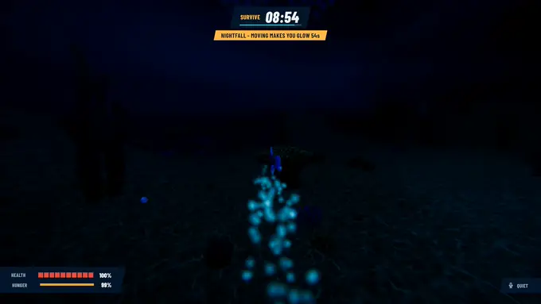
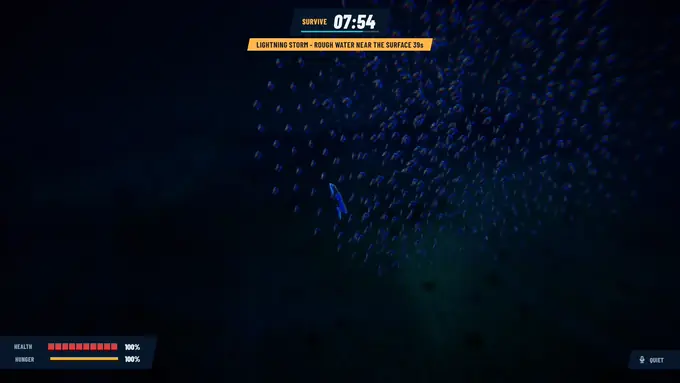
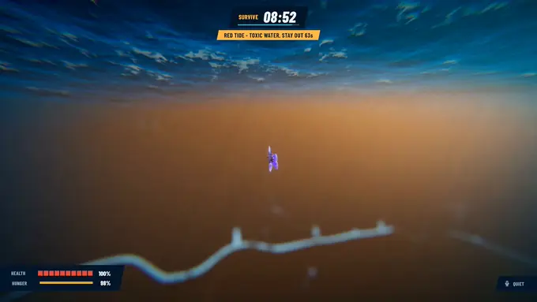
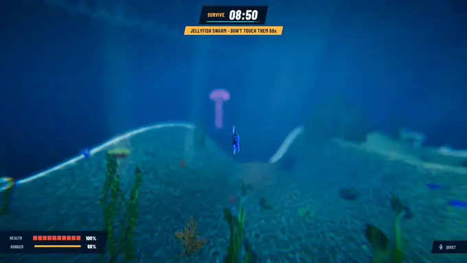
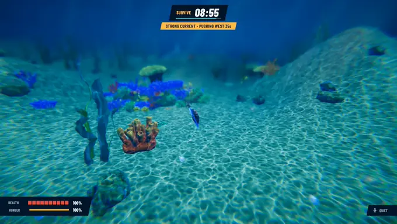
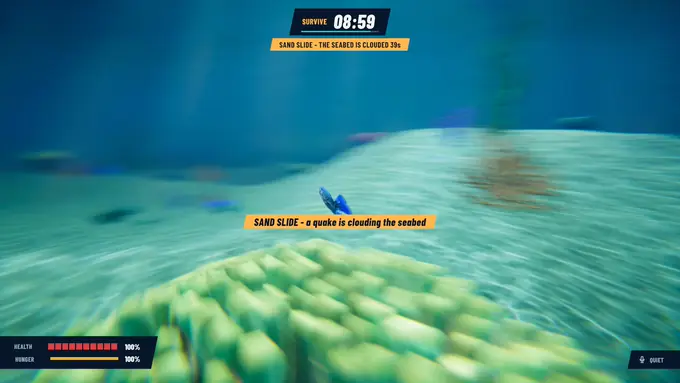
The ninth is a cold layer that slows everything inside it. All clips are recorded from the current build, started from the main menu. Work in progress.
A round, start to finish
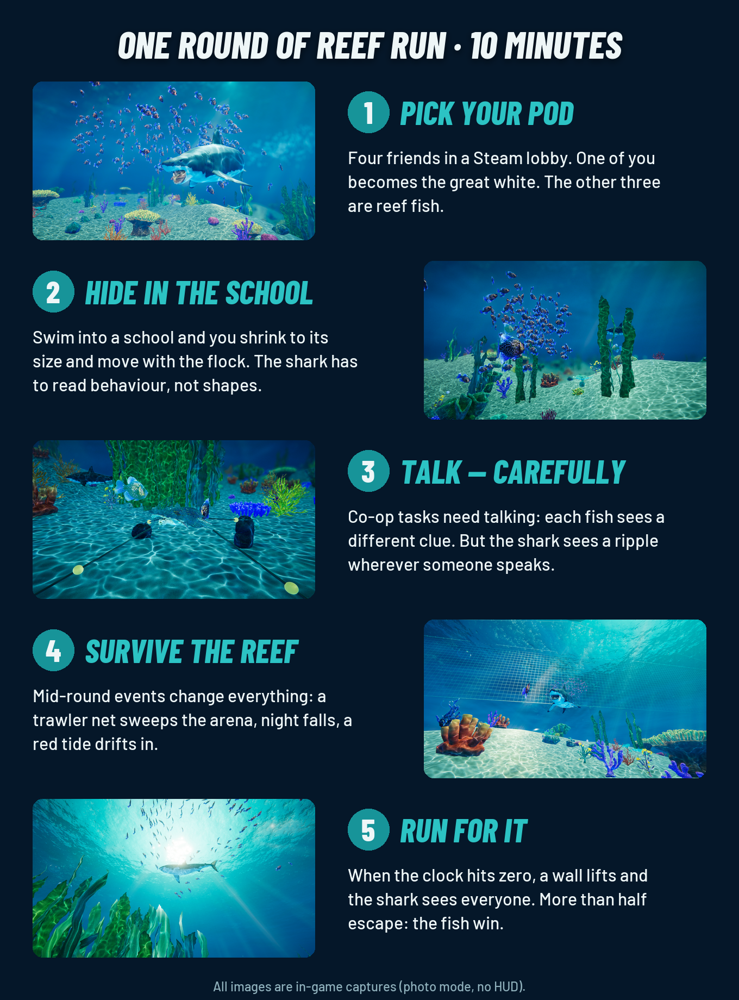
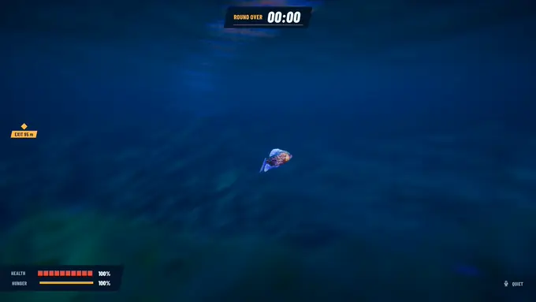
What exists today, and what your pledge adds
Reef Run is not an idea. A full online round is playable now: Steam lobbies, proximity voice, the hearing system, three tasks, nine events, the escape and the ghost channel.
What it isn't yet is finished. The campaign pays for the unglamorous half of making a game: fixing what breaks when real groups play, performance on modest PCs, onboarding, full controller support, push-to-talk and accessibility options.
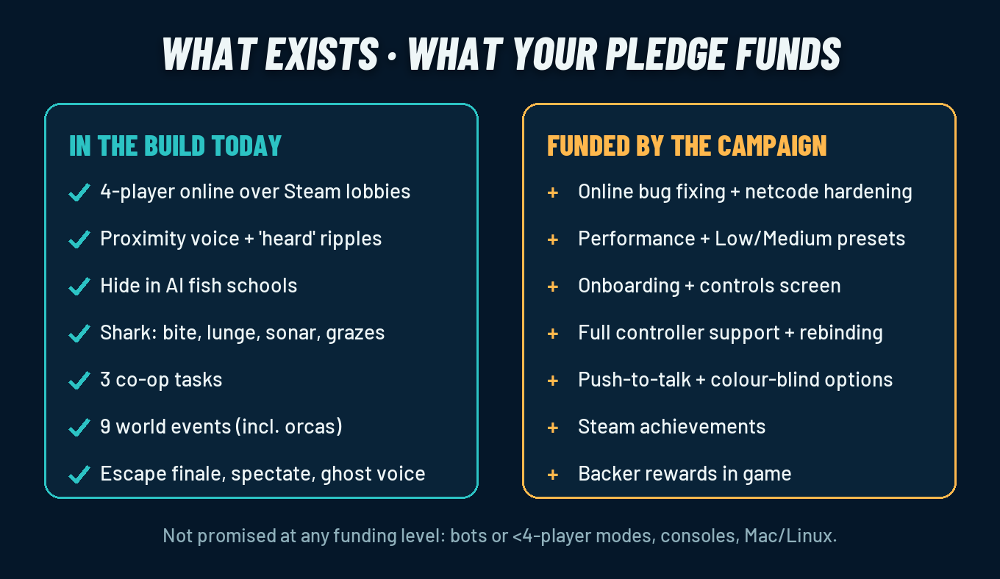
We are not promising bots, modes for fewer than four players, consoles, or Mac and Linux at any funding level.
Rewards
Everything is digital, so there is no shipping to wait for or pay. The game is meant for four, so the more of you pledge together, the less each seat costs. The Pod of Four is the cheapest way in: €11 a seat, and your whole group is sorted.
| Tier | Pledge | You get |
|---|---|---|
| Ripple | €5 | Supporters credit, Discord backer role, 4K wallpapers. No game. |
| Early Diver first 120 | €12 | Reef Run on Steam: backer beta, then the full game. Supporters credit. |
| Diver | €15 | Same as Early Diver. |
| Dive Buddies | €26 €13 a seat | 2 Steam keys, one for you and one for a friend. 2 Supporters credits. |
| Pod of Four ⭐ | €44 €11 a seat | 4 Steam keys for your group, beta for all four, 4 Supporters credits, and Pod Stripes: a matching fish pattern only pack backers get. |
| Founding Pod | €99 | Pod of Four, plus 4 Founder cosmetic sets (fish "Founder Fin", shark "Old Scar"), 4 Founders credits and the Making-of PDF. |
| Name the Trawler 10 only | €199 | A Steam key, the Founder cosmetics, a Founders credit and the PDF, plus your name on the trawler's hull. Names are checked by us and rotate each round. |
Planned price on Steam is €12.99. Backer beta: July 2027. Full release: Q4 2027. Keys arrive through Kickstarter's Pledge Manager. [[VAT line from your accountant]]
Stretch goals
The goal finishes the game you have seen on this page. Anything above it goes into more game. Every stretch goal ships as a free update for everyone who owns Reef Run.
- €14,000 Funded: Reef Run, finished, polished and on Steam.
- €17,500 A fourth co-op task, and an extra Kickstarter cosmetic for every backer.
- €21,000 Backers vote on a 10th world event, and a Steam Deck pass.
- €28,000 Six more languages: German, French, Spanish, Brazilian Portuguese, Polish and Dutch.
- €35,000 An original soundtrack from a commissioned composer.
- €56,000 A second map (kelp forest or shipwreck), two more tasks and four months of free updates.
Where the money goes
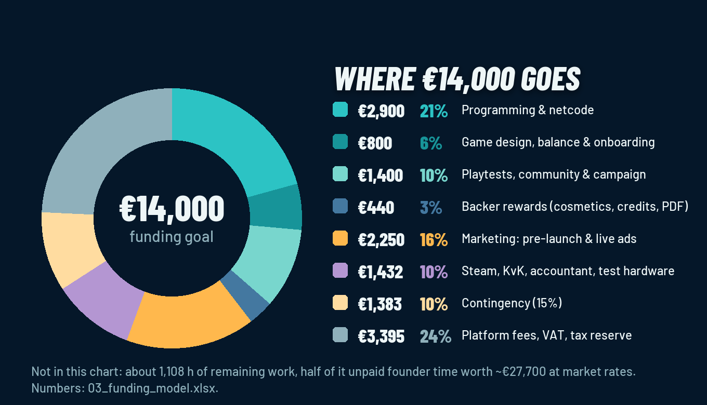
About a quarter of every campaign never reaches the game: platform and payment fees, failed payments, VAT and tax. We would rather show that than hide it.
About 1,100 hours of work remain. Half of them stay unpaid even if we fund. That is our share of the bet.
Roadmap
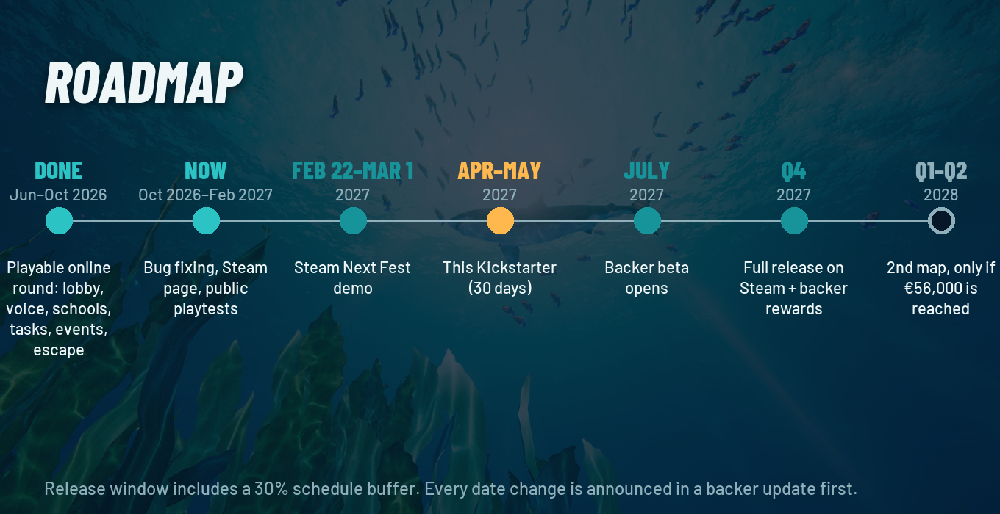
The release window already includes a 30% buffer. If a date moves anyway, backers hear it from us first, with the reason.
Who is making this
[[Two or three sentences in your own words: who you are, why a shark, and the game night that started it. First person. This is the one section nobody else can write.]]
We are Unacite Studio, two developers in the Netherlands. We started Reef Run in June 2026 and have built it in our evenings and weekends since, [[N]] commits so far. Everything you see on this page was captured from the game.
[[If true by launch: "N groups played our public playtest, and X% said they would buy it."]]
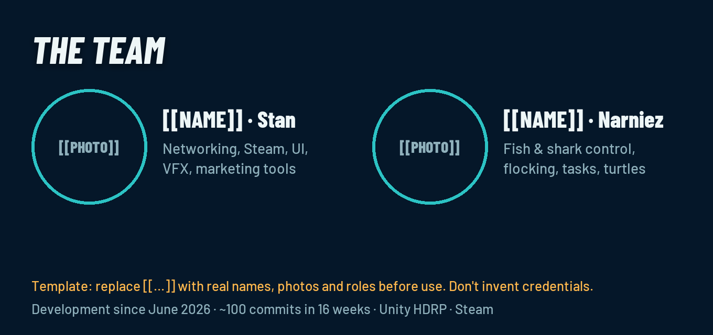
Can't back us today?
Even if you don't plan on pledging, you can still help Reef Run exist: wishlist it on Steam, and come play a test round with us on Discord. Both cost nothing, and both matter more than you would think.
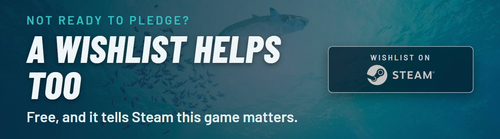
Thank you for reading this far. See you on the reef. Try to keep it down.
Risks and challenges
We are two people. If one of us is out, things slow down. That is why the goal only covers a game that already runs, plus polish.
Online games break in the wild. Backers get a beta months before release, and bug fixing is our largest budget line.
It needs four players. Public lobbies and our Discord help you find a group, and the pack tiers make the seats cheaper the more of you pledge together. We are not promising bots.
There are no servers to shut down. One of the four players hosts the round through Steam, so the game does not depend on us paying a server bill.
Dates can move. There is a 30% buffer in the schedule. If a date slips anyway, you hear it from us first.
FAQ
What platforms?
PC (Windows) on Steam. No consoles, Mac or Linux are promised.
Is it really exactly four players?
Yes: one shark, three fish. The whole design leans on that number.
I don't have three friends who play. Now what?
Public lobbies are in the game, and our Discord has a group finder. There are no bots.
Do I need a microphone?
You need one to get the most out of it. Open mic works today; push-to-talk is funded by this campaign.
What happens to online play if you stop working on it?
It keeps working. One of the four players hosts each round through Steam, so there is no server of ours to switch off.
Am I the shark every round?
No. The shark is picked at random each round.
Is there a demo?
[[Yes: link / "A demo is planned for Steam Next Fest, February 2027."]]
When do I get to play?
Backer beta in July 2027. Full release in the fourth quarter of 2027.
What will it cost on Steam?
Planned at €12.99. Steam buyers will get a launch discount comparable to the backer price.
How do I get my key?
Through Kickstarter's Pledge Manager after the campaign ends. Steam keys for the beta go out in July 2027.
Can I pledge after the campaign ends?
No. Steam's rules don't allow selling keys through late pledges before release. After that, the game is on Steam.
Will it run on Steam Deck? Other languages?
English at launch. A Steam Deck pass and six more languages are stretch goals, so they depend on how far the campaign goes.
Did you use AI?
For code, yes: we use an AI coding assistant, and we test and ship every change ourselves. There is no AI-generated art, music, sound or voice in Reef Run. Details are in the Use of AI section.
What about taxes?
[[VAT line from your accountant]]
Use of AI
Does your campaign page contain any generative AI? · Yes
The text on this page was drafted with an AI writing assistant and then edited by us. Every image and clip is captured from the game or built from those captures. None of them is AI-generated.
Will your final project contain any generative AI? · Yes
We use an AI coding assistant to help write and review Reef Run's code. We decide what gets built, and we test and ship every change ourselves.
Reef Run contains no AI-generated art, models, music, sound effects, voices or writing. Art comes from our own work and from licensed asset packs; music and sounds are licensed and credited in the game.